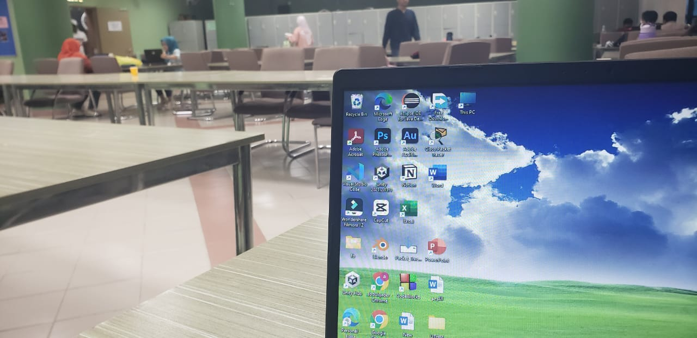

Attending lectures is a vital part of my university life. I believe in active participation in class, staying attentive, and taking detailed notes. Engaging in discussions, asking questions, and collaborating with fellow students enhances my understanding of the course material. I find that being present both physically and mentally in lectures is the key to academic success.
University Celebrations
I thoroughly enjoy being part of the vibrant university community and actively participate in various events and celebrations. These gatherings provide an excellent opportunity to connect with my peers, create lasting memories, and truly immerse myself in the university spirit. Whether it's cultural festivals, sports competitions, or academic gatherings, I relish the chance to celebrate and bond with my fellow students.

Studying in the Library
The university library is my sanctuary for focused learning and academic growth. It offers a quiet and productive environment for me to study my lessons, conduct research, and delve into the world of knowledge. With an abundance of resources at my disposal, I utilize the library as a hub of information and a valuable resource for achieving academic excellence. It's where I can fully concentrate on my studies.
Going for a Walk
One of my favorite activities is going for a walk after the rain in my university to witness the breathtaking beauty of the natural world. There's something enchanting about the glistening raindrops on leaves, the fresh scent in the air, and the serene ambiance that follows a rain shower. These walks allow me to clear my mind, find inspiration for my writing, and connect with the beauty of the world around me. It's a simple yet deeply rewarding experience that brings me joy and serenity.